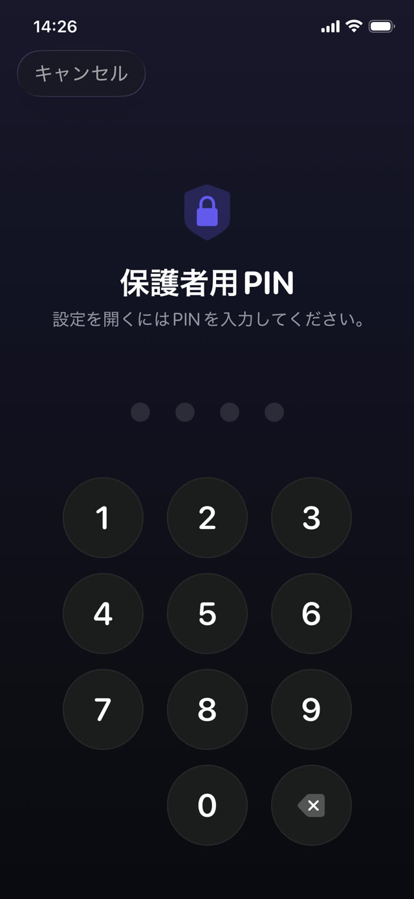

まず設定そのもの、次に扉、最後にその閉じ方です。


標準の方法：Apple のスクリーンタイム
お子さまの iPhone で、または端末がファミリー共有に入っているならご自身の端末から。
- 「設定」を開き、「スクリーンタイム」をタップします。
- 「コンテンツとプライバシーの制限」をタップしてオンにします。
- 「App 使用時間の制限」でカテゴリや個別のアプリを制限し、「休止時間」で許可したものだけが動く時間帯を設定します。
- 端末のロック解除パスコードとは違うスクリーンタイム・パスコードを設定します。誕生日は使わないでください。
- 「コンテンツとプライバシーの制限」で、パスコードとアカウント設定の変更をブロックします。
子どもが実際に見つける抜け道
どれも技術の知識はいりません。すべて学校で共有されます。
- 削除して入れ直す。特定のアプリに紐づいた制限は、消して再ダウンロードすればすり抜けられます。アプリのインストール自体を制限していなければ、です。
- ブラウザ。TikTok や YouTube のアプリをロックしても、Safari で同じサイトが開けるなら意味がありません。カテゴリごとロックするか、Web コンテンツも制限してください。
- 時計を変える。端末の日付と時刻をずらすと制限が混乱することがあります。日付と時刻の設定をロックしていなければ、です。
- 入力を見られる。パスコードは、推測されるより肩越しに覚えられることのほうが多いのです。
- 「もっと時間を要求」。あなたのスマホで承認がワンタップなら、気を取られながら承認してしまい、制限は消えます。
時間制限の、より深い問題
完璧に隙をふさいだ設定にも、設計上の欠陥があります。時間が終わったとき、変わったのはお子さまが退屈してあなたに腹を立てていることだけ、という点です。ロックは空白を作ります。それを埋めるのは、交渉か抜け道のどちらかです。
だから長持ちする設定は、ただロックするのではなく、ロックの向こう側に何かを置きます。アプリは消えたのではなく、やる価値のある課題の後ろにあるのです。
目的のあるロック
Guardian Reader は内部で同じ Apple のスクリーンタイムを使うので、ロックは OS のレベルで効きます。ブラウザ拡張や、軽い気持ちで消せるプロファイルではありません。違うのは、何が解除するかです。
タイマーが切れるのを待つ代わりに、お子さまは紙の本のページをスキャンし、通して音読します。アプリは音読をスキャンした本文と照合し、保護者が決めた分数を渡します。それが尽きると、アプリは自動で再びロックされます。
設定の手順
- お子さまの iPhone に Guardian Reader をインストールして開きます。
- 求められたらスクリーンタイムへのアクセスを許可します。これは Apple 自身の権限です。
- ロックするアプリやカテゴリを選びます。ゲーム、YouTube、TikTok、SNS、あるいはそのすべて。
- 1セッションのページ数と、獲得できる分数を設定します。
- 保護者用 PIN を作ります。端末のパスコードとも Face ID とも別です。その iPhone に登録された顔はお子さまのものだからです。
なぜ PIN で、Face ID ではないのか
この一点は、聞こえる以上に重要です。子どものスマホでは生体情報は子どものものなので、Face ID で開く「保護者ロック」は子どもにも開きます。Guardian Reader はあえて、あなただけが知る PIN のみを使い、誤入力が続けばロックアウトします。